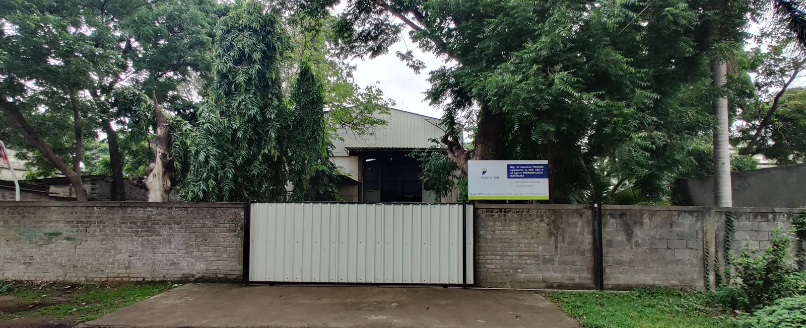

To deliver durable, corrosion-resistant engineering solutions that improve process reliability, safety and long-term industrial performance.
Engineered for industry.
Built for trust.
We make high-performance thermoplastic and FRP process equipment for aggressive industrial environments, combining material know-how, precise fabrication and practical engineering.

Our story
From one shed to the world's demanding plants.
Plasto-Fab began in 1992 in Ankleshwar, Gujarat, founded by Mr. Mehul Pandya, a DVS-certified plastic welder. Work started in our first shed in Ankleshwar GIDC, with 12,000 sq ft of manufacturing space.
Today Plasto-Fab is recognised as a technically advanced, quality-driven manufacturer. We design, engineer, manufacture, erect and commission chemical process equipment and piping in reinforced plastics such as GRP, and GRP-reinforced PVC, PP, PVDF, FEP and PFA.
We are also the go-to choice for field service, repair and installation, wherever the site is. Repeat orders from most of our clients are the best proof we know of the quality we deliver.
Where we are
Halfway between Ahmedabad and Mumbai.
Our location on the national highway, NH 8 (now NH 48), puts us within reach of almost any production or site project in western India.
From the first sketch to the running plant.
- DesignFabrication drawings, or yours
- EngineeringFor your loads and chemicals
- ManufacturingWelded to DVS standards
- ErectionOn your site
- CommissioningAnd field service after
To give clients value for money on every project we take on, and to shape the future of corrosion-resistant process engineering with smarter materials and reliable solutions.
- Integrity and commitment, on simple principles
- Complete client satisfaction, always the priority
- Technologically superior products and quality service
1992Founded
12,000sq ft first shop
250+Satisfied clients
1,500+Projects done
NextClients